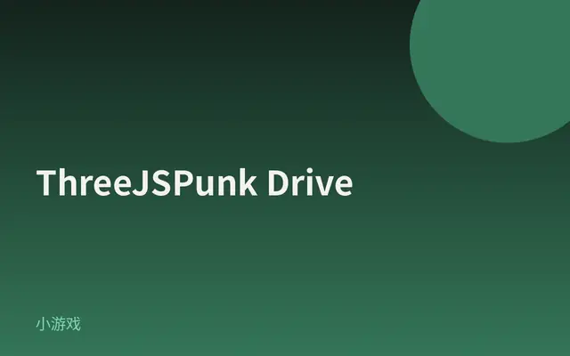
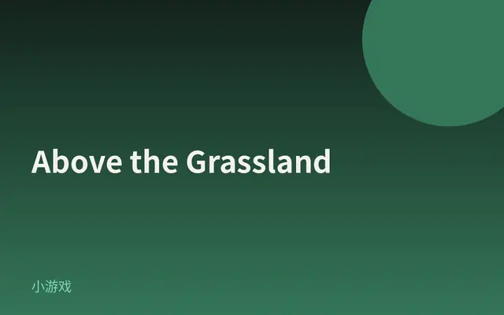
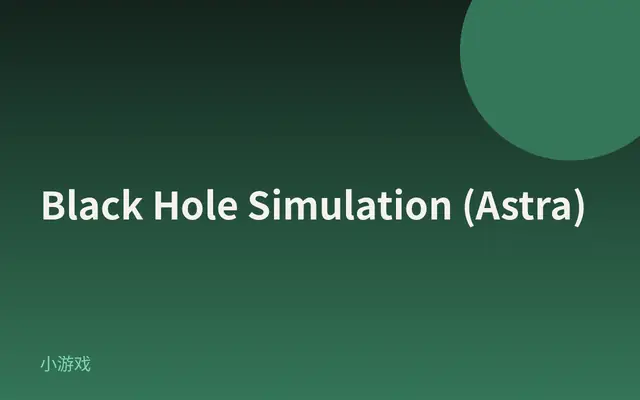
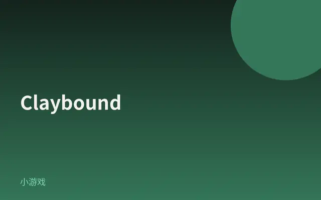
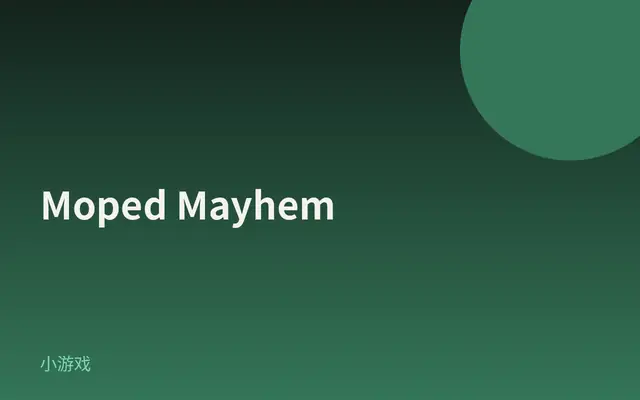
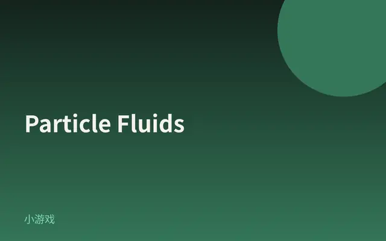
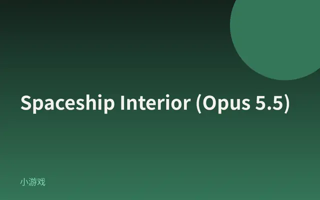

ThreeJSPunk Drive
赛博朋克全城夜驾：霓虹、雨雾、车灯反射与任务驾驶，是今天视觉冲击最强的可玩 WebGPU/Three 狂飙。

打开网站 ↗它是什么：一场能直接开的赛博朋克夜驾：雨夜霓虹城、湿路反射、氮气漂移和任务关卡，都在浏览器里。
好在哪：一眼就是大片级可玩世界——不是循环短片，是整座城都能飙；视觉冲击今天 8 条里最强。
怎么做到的：
- 主渲染走 Three.js r186 的 WebGPURenderer；HTML/作者都写明 WebGPU + TSL。
- StorageBuffer + compute 在 GPU 侧推进一部分世界；ReflectorNode 与湿路/反射调参撑起雨夜霓虹倒影。
- BatchedMesh / multiDraw 扛稠密城市场景；BloomNode + SMAANode 做后期；GSAP 3.15.0 辅助动效；没有 React/R3F。
完整技术拆解
今日拆解 · ThreeJSPunk Drive
- Live: https://threejspunk.com/（备：https://threejspunk.vercel.app/）
- Author: Anderson Mancini + Sunag
- Source: X @Andersonmancini · https://x.com/Andersonmancini/status/2104564784377028636 ；Three.js Discourse 展示帖（作者自述 WebGPU / TSL / GPUCompute）
- Bundle: Vite 产物
./assets/index-BWmf9aKF.js+./assets/index-BtXIz685.css（HTML：type="module"）；另有 Draco / Basis 解码 chunk - 证据：对本页 HTML + 主 bundle（含
const hl="186"、data-engine写成 `three.js r${hl} webgpu、WebGPURenderer、MeshStandardNodeMaterial、StorageBuffer、computeAsync、BloomNode、SMAANode、ReflectorNode、BatchedMesh、multiDraw、GSAP 3.15.0、rain/nitro/drift` 玩法字面量；无 React / R3F）的抓取核对；HTML meta / JSON-LD 写明 WebGPU、Three.js、TSL；作者 Discourse 帖对照
为何选它
8 条里它视觉冲击最强：整座赛博朋克夜城可开可漂，霓虹、雨雾、湿路反射和车灯同屏，还是完整关卡向驾驶游戏——不是短片循环，是能玩很久的 WebGPU 狂飙。作者明确写了 WebGPU + TSL + GPU 计算与大量自定义渲染，比平面酷站更配今日最炫。
实际在源码里找到的技术栈
const hl="186"；data-engine 写成 `three.js r${hl} webgpu；window.__THREE__=hl`WebGPURenderer；日志串 THREE.WebGPURenderer: ${hl}TSL 63 次；Fn( 40 次；NodeMaterial 44；MeshStandardNodeMaterial 5；签名串 // Three.js r${hl} - Node SystemStorageBuffer 34 次；StorageBufferAttribute 18 次compute( 20 次；computeAsync 4 次BloomNode、SMAANode、PostProcessing——后期光晕与抗锯齿ReflectorNode + reflectionBloom / wetnessPower / rippleStrength 等调参字面量同在BatchedMesh 28；multiDraw 30；InstancedMesh 9——大批量城市场景绘制GSAP 3.15.0 / CSSPlugin 3.15.0type="module" 的 /assets/index-*.js + 配套 CSS——典型 Vite 产物draco_* 与 basis_transcoder-* chunk——网格 / 纹理 GPU 压缩路径rain、nitro、drift 大量出现，与页面描述的雨夜漂移、氮气一致react-dom / createRoot / @react-three/fiber / useFrame——主路径是原生 Three + 自研游戏壳，不是 R3FWebGLRenderer 字面量仅 3 次（可能是兼容/报错路径残片，不能当成主渲染器）；rapier 仅 1 次字符串级命中——未证实用了 Rapier 物理；作者 Discourse 写的「GPUCompute」与 bundle 里的 compute/StorageBuffer 路径一致，但没有单独的 GPUCompute 类名字符串核心效果怎么工作（源码 + 标明推测）
1. WebGPU + Three.js r186 主路径（确认）
页面用 WebGPURenderer；data-engine 写成 three.js r186 webgpu。主路径不是经典 WebGLRenderer。
2. TSL 节点图 + 标准节点材质（确认）
TSL / Fn( / NodeMaterial / MeshStandardNodeMaterial 同在：材质与部分着色逻辑走 Three 的节点 / TSL 链，而不是一大坨手写 raw GLSL 主材质（具体哪张车漆/霓虹节点图 = 推测到作品层，类名已确认）。
3. StorageBuffer + compute：GPU 侧算一部分世界（确认类名）
StorageBuffer + compute / computeAsync 同在。作者 Discourse 自述含 GPUCompute——与「计算留在 GPU」一致。具体算的是雨粒子、车流还是反射辅助缓冲 = 推测，未在 minify 后读出完整内核名。
4. 湿路反射与后期（确认符号；语义部分推测）
ReflectorNode 与 reflectionBloom / wetnessPower / ripple* 调参同在——雨夜霓虹「印」在湿柏油上的观感由此支撑。BloomNode 提亮霓虹；SMAANode 收锯齿。
5. 大批量城市场景（确认）
BatchedMesh / multiDraw / InstancedMesh 出现——密楼、车流、道具更可能走批处理 / 间接绘制，而不是每栋楼一个独立 draw call（具体哪类物体用了 BatchedMesh = 推测）。
6. 驾驶手感与动效辅线（确认库；手感 = 玩法字面量）
GSAP 3.15.0 在包内；nitro / drift / rain 玩法字面量密集。UI / 过场 / 数值动画很可能借 GSAP；驾驶物理引擎未在 bundle 中证实为某一公开库（见上「未证实」）。
7. 伪代码（忠实于 bundle 符号 + 作者自述）
boot:
Vite module entry
renderer = WebGPURenderer # Three.js r186
data-engine = "three.js r186 webgpu"
# 无 React / R3F
world (GPU):
StorageBuffer + compute/computeAsync
TSL Fn / NodeMaterial / MeshStandardNodeMaterial
BatchedMesh / multiDraw / InstancedMesh
ReflectorNode + wetness / reflection* uniforms
Draco / Basis 解码资源
post:
BloomNode
SMAANode
PostProcessing
play:
rain / nitro / drift 字面量驱动的驾驶关卡环
GSAP 3.15.0 辅助过渡与 UI（确认有库；具体 tween 列表未逐条点名）对照阅读
- 作者 Discourse 展示帖：[FREE GAME] CyberPunk Inspired Game（标签 webgpu / game-dev；自述 WebGPU、TSL、GPUCompute）
- 备援部署：https://threejspunk.vercel.app/
- 作者站：https://andersonmancini.dev/
零基础也能看懂。先认识这件作品用到的技术，再学一个知识点。
1技术栈小白版
只列拆解里在源码中确认过的技术。点开看它在这件作品里做了什么。
Three.js r186
在这件作品里整座赛博朋克夜城的场景与渲染管线跑在 Three.js r186 上。
怎么认出来浏览器里能开车、看雨夜霓虹的实时 3D，而不是一段预渲染预告片。
WebGPURenderer
在这件作品里主渲染器是 WebGPURenderer，所以稠密夜城还能保持可玩帧率。
怎么认出来用较新的 Chrome / Edge 打开更稳；页面也写明需要 WebGPU。
TSL / 节点材质
在这件作品里bundle 里有 TSL、Fn 与 MeshStandardNodeMaterial，材质走节点链。
怎么认出来车身与路面有现代 PBR 质感，又和 WebGPU 路径绑在一起。
StorageBuffer + compute
在这件作品里StorageBuffer 与 compute / computeAsync 同在，一部分世界在 GPU 侧推进。
怎么认出来城市场景持续动、下雨与车流压力大时仍偏「顺」，而不是整页卡成幻灯片（观感层面）。
ReflectorNode + 湿路反射
在这件作品里ReflectorNode 与 reflectionBloom / wetness 等调参一起出现，撑起雨夜倒影。
怎么认出来低头看路面时，霓虹条带在水膜上拉丝、发亮。
BloomNode / SMAANode
在这件作品里后期用 BloomNode 提赛博空气感，SMAANode 收楼宇与车灯毛刺。
怎么认出来霓虹有一层柔光，远景边缘相对干净。
2今日知识点
为什么要学设计史
设计史不是背年份，是练一双能认出「这套样子从哪来」的眼睛。今天打开 ThreeJSPunk：紫粉霓虹、雨夜湿街、飞行器广告牌、合成器电台——你可能脱口而出「赛博朋克」。这个词不是游戏发明的标签，而是一条已经走了几十年的视觉血统。
学一点历史，你会多问三句：
- 它像谁？ 雨夜霓虹大街，常让人想到电影《银翼杀手》（1982）里的夜之城。
- 它借了什么？ 湿反射、故障感招牌、低沉电子乐，是后来游戏、MV、网页 demo 反复借用的「零件」。
- 我能不能故意用？ 知道血统之后，你才是在选用风格，而不是碰巧撞上一种网感。
它从哪里来
「赛博朋克」作为科幻流派，常被追溯到 1980 年代前后：里德利·斯科特的电影《银翼杀手》（Blade Runner，1982）把「未来都市 = 雨 + 霓虹 + 亚洲感招牌」焊进大众视觉；威廉·吉布森的小说《神经漫游者》（Neuromancer，1984）则把赛博空间与街头黑客的想象写进文学。
之后几十年，游戏、音乐（如 synthwave）、广告和网页实验不断引用这套零件：不是复制某一帧，而是让观众 0.5 秒内读出「啊，未来夜城」。ThreeJSPunk（2026）用 WebGPU 把这套语言做成可驾驶的浏览器游戏——技术是新的，风格语法却有谱系。
所以「为什么要学设计史」可以收成一句：历史帮你给眼前的美命名，命名之后才好学习、致敬或故意打破。
经典参考
- Blade Runner（银翼杀手，1982）雨夜霓虹未来城的大众视觉原型之一；对照 ThreeJSPunk 的街道气质。
- William Gibson · Neuromancer（神经漫游者，1984）赛博朋克文学的关键作品；理解「赛博 + 街头」这套想象从哪来。
- Anderson Mancini · Three.js Discourse 展示帖作者本人说明这是完整驾驶游戏，并点名 WebGPU / TSL / GPUCompute。
- 打开 ThreeJSPunk，静置看 5 秒：你先认出的「赛博」零件是霓虹、雨、湿路，还是飞行器/广告牌？写下一个词。
- 把这个词当成「血统线索」：它更像电影海报、游戏截图，还是音乐 MV？用一句话说明为什么。
- 找一张你平时喜欢的海报/App 启动页，问：它在引用哪一种已有风格（极简、孟菲斯、赛博、扁平）？写「像 ___」或「说不清」。
- 若说不清——这正好是学设计史的理由：名字会慢慢变多，眼睛会越来越快。
小词典
- 设计史
- 研究设计风格、作品与观念怎样一路变过来；用来认血统，不是只背年表。
- 赛博朋克（Cyberpunk）
- 一种科幻风格：高科技 + 低生活感，常出现霓虹夜城、黑客与巨型公司意象。
- 视觉血统 / 风格谱系
- 一套反复出现的样子（颜色、材质、天气、排版）有更早的来源与后来的引用链。
- WebGPU
- 浏览器里较新的图形接口，更适合在显卡上做大规模计算再绘制。
- TSL（Three Shading Language）
- Three.js 的节点/着色描述方式，用节点图搭材质与效果，而不是只写传统大段着色器。
3知识地图进度






设计雷达 · 每天 8 个值得看的网站、App UI 和网页小游戏